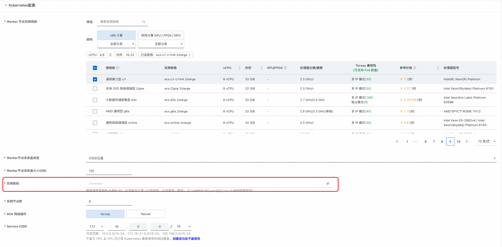
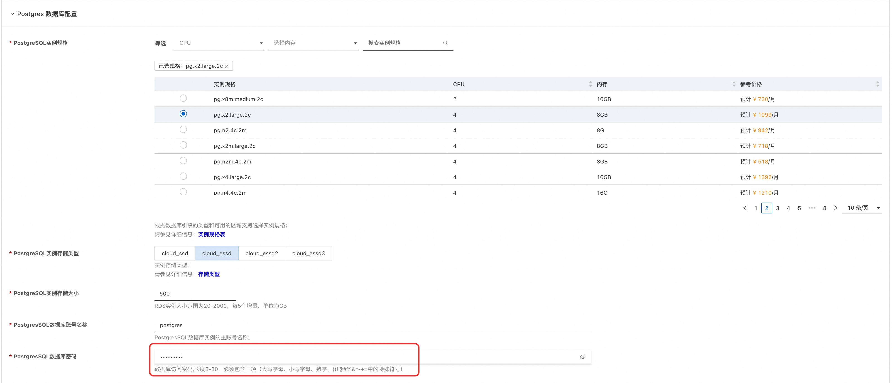
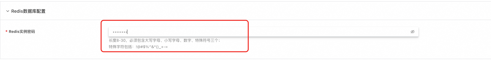
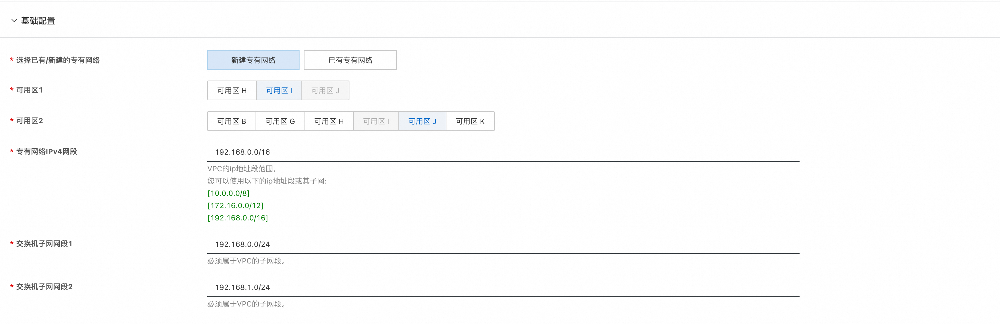

Dify企业版-计算巢快速部署指南
概述
Dify 企业版是一款面向大型组织和团队的私有部署 AI 中间件解决方案，旨在推动企业内部向 AI+ 时代转型。
Dify 采用无代码设计理念，使业务人员能够直接构建和部署 AI 应用，无需深厚的编程知识。 企业版服务配备了强大的管理后台，支持精细化的权限控制和 Workspace 管理，确保团队协作效率和数据安全。同时还提供全面的数据监控服务，助力管理者实时掌握 AI 应用性能和数据使用情况，为决策提供数据支持。
通过私有部署选项和符合企业级安全标准的设计，Dify 企业版在保障数据安全的同时，为组织提供了稳定可靠、可扩展的 AI 基础设施，助力你的企业在 AI 时代保持竞争优势。
本方案提供了在阿里云部署Dify的最佳实践，基于阿里云ACK部署，且同时支持集成云数据库, 可以实现Dify稳定、高性能部署，适用于用于生产环境。
资源清单
按照以下资源配置可以支持每日最多 3000 活跃用户。如果您有更多用户，可以根据需要扩展资源。
- ACK集群: 6 个工作节点, 每个节点8 CPU，32 GB RAM
- 对象存储 OSS
- Postgres 数据库: 4 CPU，8 GB RAM ,500 GB SSD 存储空间
- Redis 数据库：2 GB RAM
- 向量数据库：支持以下两种向量数据库，选择其中一个即可 1.Tablestore: CU模式（原按量付费），存储弹性，容量无限制 2.AnalyticDB PostgreSQL版: 8 CPU，32 GB RAM, 100 GB 存储空间
前提准备
Dify 企业版需要使用容器镜像仓库来存储和管理插件镜像。 插件本身不是一个 Docker 镜像，而是一个包含插件代码和元数据的压缩包。 当插件部署到 集群时，该压缩包会被构建成 Docker 镜像，因此必须配置容器镜像仓库。
这里以阿里云容器镜像仓库为例介绍准备步骤：
1. 创建一个企业版的容器镜像服务实例，也可以选择已有的容器镜像服务实例。
 2. 配置容器镜像仓库的访问控制，给实例打开公网访问，记录公网访问的endpoint
2. 配置容器镜像仓库的访问控制，给实例打开公网访问，记录公网访问的endpoint
 3. 创建存储插件的命名空间，配置"自动创建仓库"，并配置仓库类型为公开，并记录命名空间的名称。
3. 创建存储插件的命名空间，配置"自动创建仓库"，并配置仓库类型为公开，并记录命名空间的名称。
 4. 设置容器镜像仓库的访问凭证，设置固定密码，并记录固定密码
4. 设置容器镜像仓库的访问凭证，设置固定密码，并记录固定密码
 5. 记录容器镜像仓库的访问用户名，如下图中所示，记录username后的数据
5. 记录容器镜像仓库的访问用户名，如下图中所示，记录username后的数据

部署流程及部署参数介绍
说明：按照上述资源清单中"每日最多 3000 活跃用户"的要求，对资源的规格选择已经设置默认值，只需要设置对应的密码即可，也可根据实际情况修改资源配置。
Kubernetes集群配置
 - 选择Worker节点实例规格：默认选择8C32G的规格，ecs.u1-c1m4.2xlarge. - 配置Worker节点系统盘类型：系统盘类型默认选择ESSD云盘。 - 配置Worker节点系统盘大小：系统盘大小默认选择120GB。 - 配置实例密码：需要用户自行配置。 - 配置实例节点数：默认选择6个节点，最少不得少于3个节点。 - ACK网络插件：默认选择terway，若选择flannel，需额外配置Pod 网络CIDR。 - 配置集群ServiceCIDR：推荐使用默认值：172.20.0.0/16，也可按需调整。
Postgres 数据库配置
 - 选择Postgres数据库规格：默认选择4C8G，pg.x2.large.2c - 选择Postgres数据库存储类型：默认选择ESSD云盘 - 配置PostgreSQL实例存储大小：默认选择500GB - 配置PostgreSQL数据库账号名称：默认使用"postgres" - 配置PostgreSQL实例密码：需要用户自行配置
Redis 数据库配置
 - 配置Redis实例密码:需要用户自行配置
向量数据库配置
 - 向量数据库支持选择“使用TableStore做向量数据库”和“使用AnalyticDB PostgreSQL做向量数据库”
- 当选择TableStore时，实例名称采取默认生成的即可，TableStore默认多 AZ 容灾
- 向量数据库支持选择“使用TableStore做向量数据库”和“使用AnalyticDB PostgreSQL做向量数据库”
- 当选择TableStore时，实例名称采取默认生成的即可，TableStore默认多 AZ 容灾
 - 选择AnalyticDB PostgreSQL时，配置以下参数
- 选择AnalyticDB PostgreSQL时，配置以下参数
 - 选择向量数据库规格：默认选择8C32G
- 配置向量数据库存储大小：默认选择100GB
- 配置向量数据库账号名称：默认使用"dify"
- 配置向量数据库实例密码：需要用户自行配置
- 选择向量数据库规格：默认选择8C32G
- 配置向量数据库存储大小：默认选择100GB
- 配置向量数据库账号名称：默认使用"dify"
- 配置向量数据库实例密码：需要用户自行配置
容器镜像仓库配置
 - 配置容器镜像仓库的前缀,取准备步骤中记录的容器镜像仓库的endpoint和命名空间名称，格式为：{endpoint}/{namespace}
- 配置访问容器镜像仓库的用户名：取准备步骤中记录的容器镜像仓库的访问用户名
- 配置访问容器镜像仓库密码：取准备步骤中记录的容器镜像仓库的密码
- 配置容器镜像仓库的前缀,取准备步骤中记录的容器镜像仓库的endpoint和命名空间名称，格式为：{endpoint}/{namespace}
- 配置访问容器镜像仓库的用户名：取准备步骤中记录的容器镜像仓库的访问用户名
- 配置访问容器镜像仓库密码：取准备步骤中记录的容器镜像仓库的密码
基础配置
 - 专有网络配置：默认选择创建一个专有网络， a) 选择新建专有网络时需要配置专有网络的网段和交换机子网网段 b) 若选择使用已有专有网络，需额外配置专有网络VPC实例ID和交换机实例ID - 可用区选择：为了确保ACK集群的高可用性，这里使用双可用区，需要选择两个可用区
验证部署结果
- 服务实例部署成功大约需要40分钟，请耐心等待。部署完成后，页面上可以看到对应的服务实例。
- 服务实例详情页可查看Dify的相关信息，根据"Host"配置的提示，在本机配置Host后，即可按照用户手册的步骤使用企业版Dify.